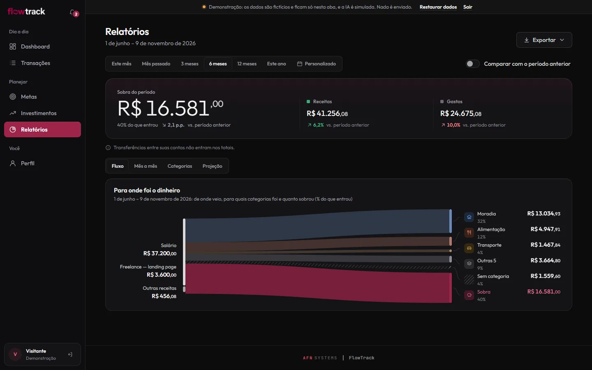

FlowTrack
Personal finances that categorize themselves.

Why it exists
I always found it hard to keep track of my own finances. Filling in spreadsheets was tedious and tiring, and the apps charged monthly fees I didn’t want to pay. So I developed my own finance organizer, built around my needs, combining the best of the tools I knew.
Problem, system, and proof
Problem
A spreadsheet that was tiring to fill in; an app with a monthly fee.
System
Personal finances with automatic categorization in 3 layers (rules, cache, and a language model); imports statements from 4 banks, OFX, and CSV.
Proof
298 tests
250 backend, 8 frontend, and 40 end-to-end. Checked on 9 Nov 2026.
Inside
-
Categorizes in 3 layers
Rules first, then cache; only what is left goes to a language model.
-

Statements from 4 banks
Imports statements from 4 banks, plus OFX and CSV files.
-

Reports
Income, expenses, and balance, spending by category, and the largest expenses.
Stack
React 19, TypeScript, FastAPI, Supabase/PostgreSQL, Language model, pytest, Playwright